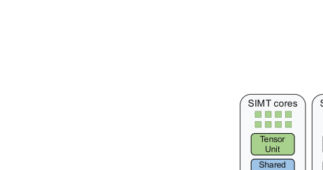
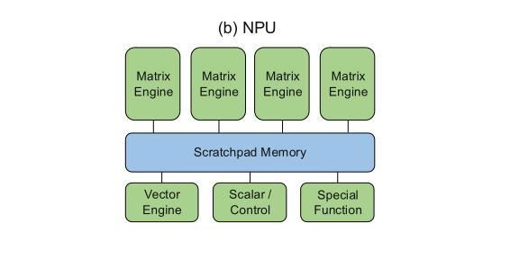
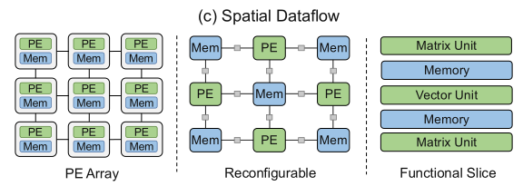
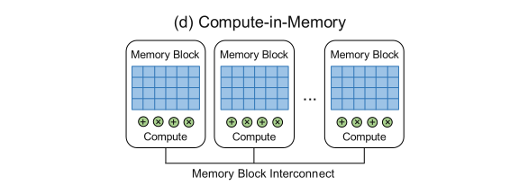

Accelerator Taxonomy and Architecture Classes
4.2.1Core Taxonomy: Four Classes of AI Accelerator Architecture#
Specialized accelerators deliver substantially more throughput and better energy efficiency than general-purpose CPUs on AI workloads, but they do not all get there the same way. Four categories cover the dominant designs, separated by their primary execution and data-movement model — not by vendor, and not by which operations they happen to support.
| Category | Computer architecture | Representative platforms |
|---|---|---|
| GPU | General-purpose SIMT architecture with dedicated tensor/matrix units | NVIDIA GPU, AMD GPU |
| NPU | Heterogeneous domain-specific architecture combining matrix, vector and scalar engines around a shared on-chip scratchpad | Google TPU, AWS Trainium/Inferentia, Qualcomm Cloud AI, Huawei Ascend, Intel Gaudi, Microsoft Maia, Cambricon MLU |
| Spatial dataflow | Computation graph mapped onto distributed compute, memory and communication resources, in three styles: PE array, reconfigurable fabric, functional-slice streaming | PE array: Tenstorrent, Meta MTIA, Tesla Dojo, Graphcore IPU, Cerebras; reconfigurable: SambaNova; functional-slice: Groq |
| Compute-in-memory | Memory-centric architecture integrating compute logic in or near SRAM or DRAM to reduce data movement | d-Matrix, SK hynix AiM, Samsung PIM |
Each category exploits a different property of AI workloads: increasing data reuse, specializing compute resources, or improving data locality. Designs in the same category still differ in supported operations, memory organization, and how much of the chip stays general-purpose. GPUs keep SIMT cores beside their matrix units; NPUs such as Google TPU and AWS NeuronCore pair specialized matrix engines with vector, scalar or SIMD execution [1, 2, 3, 4]. Memory systems mix the same way, combining hardware-managed caching with software-managed storage for explicit reuse.
So the useful question is not what an accelerator is called. It is which computations and which data movements receive dedicated hardware support, and which are left to general-purpose hardware or to software. Each platform below is assigned a primary category by its dominant execution and data-movement model, while acknowledging that secondary mechanisms — systolic execution, compiler-managed placement, near-memory arithmetic — cut across categories.
| Category | Accelerator | Compute engines | Memory | Scale-up topology |
|---|---|---|---|---|
| GPU | NVIDIA GPU | SIMT + tensor cores | HBM | Cube/hybrid cube mesh; switched all-to-all |
| GPU | AMD GPU | SIMT + matrix cores | HBM | Direct full mesh / switched all-to-all |
| NPU | Google TPU | Matrix + vector + scalar; SparseCore or collectives acceleration engine, depending on generation | HBM | 2D / 3D torus; Boardfly |
| NPU | AWS Trainium | Matrix + vector + scalar + programmable SIMD | HBM | 2D torus; switched all-to-all |
| NPU | Qualcomm AI 100 | Matrix + VLIW vector and scalar units | LPDDR | — |
| NPU | Huawei Ascend | Matrix + vector + scalar units | HBM | UB-Mesh: nD full mesh |
| NPU | Intel Gaudi | Matrix + VLIW vector units | HBM | Direct full mesh |
| NPU | Microsoft Maia | Matrix + vector units | HBM | Switched Ethernet |
| NPU | Cambricon MLU | Matrix + vector + scalar units | DDR4 / LPDDR / HBM | — |
| Spatial | Tenstorrent | RISC-V cores + matrix/vector units | GDDR6 | 2D mesh Ethernet |
| Spatial | Meta MTIA | PE grid with matrix + vector units | LPDDR / HBM | Switched PCIe / Ethernet-based fabrics |
| Spatial | Graphcore | Tile processors, FP16 vector MAC + FP32 scalar FPU | DDR4 | 2D torus |
| Spatial | Tesla Dojo | Tile processors, matrix + SIMD vector + scalar units | On-chip SRAM + HBM | 2D mesh die-to-die |
| Spatial | Cerebras | Wafer-scale PE array; SIMD + scalar; data-triggered execution | On-chip SRAM | 2D mesh on-wafer |
| Spatial | SambaNova | Reconfigurable SIMD compute + memory tiles | HBM + DDR | Direct peer-to-peer RDU links (SN40L) |
| Spatial | Groq | Matrix/vector units + SRAM/switch slices; statically scheduled | On-chip SRAM | Dragonfly |
| CIM | d-Matrix | Digital in-SRAM MAC array | LPDDR5 | Switched PCIe |
| CIM | SK hynix AiM | BF16 MAC-based PIM units | GDDR6-AiM | — |
| CIM | Samsung PIM | FP16 SIMD PIM processors | HBM-PIM | — |
4.2.2GPU: General-Purpose Parallel Execution and Specialized Matrix Computation#

GPUs keep the SIMT (single-instruction, multiple-thread) execution model that made them broadly programmable, and add tensor or matrix cores for the dense linear algebra that dominates modern AI [1, 5, 2, 6, 7]. That combination is the category's defining trait: nothing is given up in generality, and specialized throughput is layered on top.
Both NVIDIA and AMD use HBM to supply their high-throughput compute units. Scale-up topology, though, is a property of the platform rather than the chip: NVIDIA systems have used several different NVLink organizations across generations, including both direct-connect and switched fabrics [8], and AMD deployments range from directly connected GPU baseboards to the switched UALoE fabric of the MI455X-based Helios rack. This is why topology is always reported together with a system configuration rather than a part number.
Programmability, high-bandwidth memory and fast scale-up communication together are what let GPUs serve as the general-purpose substrate of large AI datacenters.
4.2.3NPU: Heterogeneous Compute Engines and Shared Local Memory#

NPUs answer the same demand with explicit heterogeneity. Representative designs include Google TPU [9, 3, 10, 11, 12, 13, 14], AWS Trainium [15, 16, 17], Qualcomm AI 100 [18], Huawei Ascend [19, 20], Intel Gaudi [21], Microsoft Maia [22] and Cambricon MLU [23].
Rather than one flexible core type, an NPU integrates several specialized ones and maps each kind of operator onto the block built for it: matrix engines for GEMM-intensive computation, vector units for activations and normalization, scalar units for control-oriented work. When operators map cleanly and the engines stay busy, this improves area and energy efficiency; when they do not, some engines sit idle. That conditional is the central trade of the category.
Some NPUs replicate a complete matrix–vector–scalar core and scale out across several of them. The Cambricon MLU is grouped here rather than with spatial dataflow for exactly this reason: it exposes a multi-core neural-processor ISA and runtime, not a tile-placement programming model.
Many NPUs use systolic arrays as their matrix engines. Instead of every processing element fetching operands from a central register file or SRAM, activation and weight streams are injected at the array boundary; interior elements take operands from their neighbours and propagate partial sums onward. Replacing most memory accesses with local neighbour-to-neighbour transfers cuts memory-bandwidth demand and saves energy. Google's TPUs pair systolic arrays for GEMM with SparseCores for embedding operations in some generations [3], while TPU 8i replaces them with a Collectives Acceleration Engine [14]. Other NPUs add programmable SIMD units for generality, as in the second-generation AWS NeuronCore [4].
Scale-up topologies across this category are unusually diverse — 2D and 3D torus, Boardfly, nD full mesh, direct full mesh, switched Ethernet and switched all-to-all all appear.
4.2.4Spatial Dataflow I: PE Arrays and Distributed Local Memory#

Spatial dataflow architectures map a computation graph directly onto distributed compute, memory and communication resources. Operator placement, local memory allocation and inter-operator data movement are all explicitly managed by the compiler and exposed to software, instead of being hidden behind caches or a centralized command stream. Controlling data movement explicitly cuts coordination overhead and memory traffic and improves locality — at the cost of requiring a compiler that can actually solve the placement problem.
PE array designs divide the chip into many programmable processing elements, each with private SRAM, connected by an on-chip network. The compiler spreads computation across them and schedules the transfers between them, so different elements can run different operators or different pipeline stages. Examples include Tenstorrent [24], Meta MTIA [25], Tesla Dojo [26] and Graphcore [27]. These systems support a wider range of memory technologies than GPUs and NPUs — GDDR6, LPDDR, DDR4 and HBM all appear.
Cerebras extends the approach to a wafer-scale mesh [28]. Fabric packets called wavelets carry data and control information and can activate tasks on a processing element. This data-triggered task scheduling coexists with local instruction sequencing: each element executes the instructions of its selected task, while the dataflow mechanism determines when work becomes ready.
4.2.5Spatial Dataflow II: Reconfigurable Architectures#
Not every spatial dataflow design replicates general-purpose processing elements. Reconfigurable architectures such as SambaNova instead provide configurable compute, memory and interconnect tiles, and the compiler maps operators and their data dependencies directly onto that fabric [29].
The distinction matters for how a design ages. In SambaNova's SN40L the compiler maps supported model graphs onto configurable tiles and programs the data routes between them, so reconfigurability buys flexibility as algorithms evolve — but only within a finite set of physical resources and supported operations [29].
4.2.6Spatial Dataflow III: Functional-Slice Streaming#
Functional-slice streaming processors, such as Groq, organize the chip into fixed functional units — matrix engines, vector engines, SRAM blocks and switches — and move data through them on a schedule the compiler decides in advance [30, 31].
The design deliberately removes the sources of timing variability that other architectures rely on. There are no caches to miss, no speculation, and no dynamic arbitration; instead the timing of computation and data movement is exposed to the compiler, which makes execution predictable. Groq extends the same principle to the network with software-scheduled networking, where the compiler resolves contention and forbids hardware backpressure, scheduling fine-grained transfers on each link for about 2.5% metadata overhead [31]. Predictability is the product here, and it is bought by moving nearly every scheduling decision to compile time.
4.2.7Compute-in-Memory: SRAM, DRAM, and the Location of Computation#

The fourth category attacks the memory bottleneck at its source by putting arithmetic where the data already is. Representative designs include d-Matrix [32], SK hynix AiM [33] and Samsung PIM [34], using digital in-SRAM MAC arrays or MAC-based and SIMD processing-in-memory units.
The motivating observation is that many AI workloads are limited not by arithmetic throughput but by the energy and latency of moving weights and activations between memory and compute. SRAM-based compute-in-memory augments bit cells and peripheral circuitry to compute inside the array [32]. DRAM-based near- and in-memory processing places vector or SIMD units beside DRAM banks and operates on data in the row buffers, doing bulk computation without crossing the external memory interface [35, 34]. Collapsing the usual load–compute–store sequence into local, highly parallel operations exploits the internal bandwidth of SRAM arrays and DRAM banks directly.
Where this pays off is specific. Compute-in-memory suits bandwidth-bound work with little temporal reuse: GEMV and matrix–vector operations at small batch sizes, embedding and projection layers, and sparse or irregular computation where a systolic array cannot fill its reuse pipeline. Workloads with high arithmetic intensity, such as large-batch GEMM, are better served by matrix engines designed to amplify reuse. Architecturally the category offers high internal parallelism but limited flexibility, and its programmability depends heavily on data layout and compiler scheduling keeping operands resident.
References
- 1.Jack Choquette. Nvidia hopper h100 gpu: Scaling performance. IEEE Micro, 2023.
- 2.Alan Smith and Vamsi Krishna Alla. AMD Instinct™ MI300X: A Generative AI Accelerator and Platform Architecture. IEEE Micro, 2025.
- 3.Norm Jouppi et al. Tpu v4: An optically reconfigurable supercomputer for machine learning with hardware support for embeddings. Proceedings of the 50th annual international symposium on computer architecture, 2023.
- 4.AWS. NeuronCore-v2 Architecture. 2026. AWS Neuron SDK 2.31.1 documentation.
- 5.NVIDIA. NVIDIA Vera Rubin NVL72 Specifications. 2026. Individual Rubin GPU specifications are preliminary and subject to change.
- 6.AMD. AMD Instinct MI455X GPUs. 2026.
- 7.AMD. AMD CDNA 5 Architecture. 2026.
- 8.William Tsu. HGX-2 Fuses HPC and AI Computing Architectures. 2018.
- 9.Google Cloud. TPU architecture. 2026.
- 10.Google Cloud. TPU v5p. 2026.
- 11.Google Cloud. TPU v5e. 2026.
- 12.Google Cloud. TPU v6e. 2026.
- 13.Google Cloud. TPU7x (Ironwood). 2026.
- 14.Google Cloud. Inside the eighth-generation TPU: An architecture deep dive. 2026.
- 15.AWS. Trainium Architecture. 2026. AWS Neuron SDK 2.31.1 documentation.
- 16.AWS. Trainium2 Architecture. 2026. AWS Neuron SDK 2.31.1 documentation.
- 17.AWS. Trainium3 Architecture. 2026. AWS Neuron SDK 2.31.1 documentation.
- 18.Karam Chatha. Qualcomm Cloud Al 100: 12TOPS/W scalable, high performance and low latency deep learning inference accelerator. 2021 IEEE Hot Chips 33 Symposium (HCS), 2021.
- 19.Yang Xiao and Zeke Wang. Aibench: a tool for benchmarking huawei ascend ai processors. CCF Transactions on High Performance Computing, 2024.
- 20.Heng Liao et al. Ub-mesh: a hierarchically localized nd-fullmesh datacenter network architecture. IEEE Micro, 2025.
- 21.Roman Kaplan. Intel gaudi 3 ai accelerator: Architected for gen ai training and inference. 2024 IEEE Hot Chips 36 Symposium (HCS), 2024.
- 22.Sherry Xu and Chandru Ramakrishnan. Inside maia 100. 2024 IEEE Hot Chips 36 Symposium (HCS), 2024.
- 23.Cambricon. BANG C Language Developer Guide. 2020. Version 2.4.1, February 21, 2020.
- 24.Jasmina Vasiljevic and Davor Capalija. Blackhole & tt-metalium: The standalone ai computer and its programming model. 2024 IEEE Hot Chips 36 Symposium (HCS), 2024.
- 25.Joel Coburn et al. Meta's Second Generation AI Chip: Model-Chip Co-Design and Productionization Experiences. Proceedings of the 52nd Annual International Symposium on Computer Architecture, 2025.
- 26.Emil Talpes et al. The microarchitecture of dojo, tesla’s exa-scale computer. IEEE Micro, 2023.
- 27.Zhe Jia et al. Dissecting the graphcore ipu architecture via microbenchmarking. arXiv preprint arXiv:1912.03413, 2019.
- 28.Sean Lie. Cerebras architecture deep dive: First look inside the hardware/software co-design for deep learning. IEEE Micro, 2023.
- 29.Raghu Prabhakar et al. Sambanova sn40l: Scaling the ai memory wall with dataflow and composition of experts. 2024 57th IEEE/ACM International Symposium on Microarchitecture (MICRO), 2024.
- 30.Dennis Abts et al. Think fast: A tensor streaming processor (TSP) for accelerating deep learning workloads. 2020 ACM/IEEE 47th Annual International Symposium on Computer Architecture (ISCA), 2020.
- 31.Dennis Abts et al. A software-defined tensor streaming multiprocessor for large-scale machine learning. Proceedings of the 49th Annual International Symposium on Computer Architecture, 2022.
- 32.Satyam Srivastava et al. Corsair: An In-memory Computing Chiplet Architecture for Inference-time Compute Acceleration. IEEE Micro, 2025.
- 33.Daehan Kwon et al. A 1ynm 1.25 v 8gb 16gb/s/pin gddr6-based accelerator-in-memory supporting 1tflops mac operation and various activation functions for deep learning application. IEEE Journal of Solid-State Circuits, 2023.
- 34.Jin Hyun Kim et al. Aquabolt-XL HBM2-PIM, LPDDR5-PIM with in-memory processing, and AXDIMM with acceleration buffer. IEEE Micro, 2022.
- 35.Seongju Lee et al. A 1ynm 1.25 V 8Gb, 16Gb/s/pin GDDR6-based accelerator-in-memory supporting 1TFLOPS MAC operation and various activation functions for deep-learning applications. 2022 IEEE International Solid-State Circuits Conference (ISSCC), 2022.